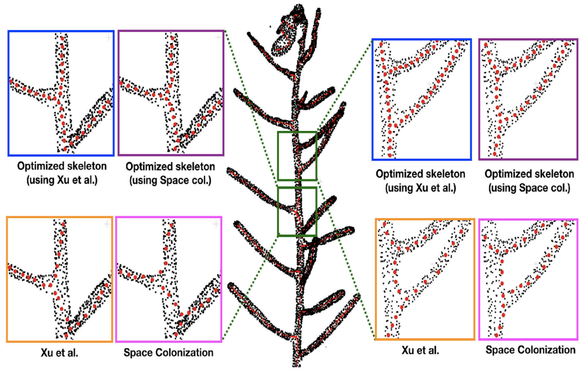

Welcome to Skeleton refinementLink


For full documentation of the ROMI project visit docs.romi-project.eu.
AboutLink
This library is intended to provide the implementation of a skeleton refinement method published here:
Chaudhury A. and Godin C. (2020) Skeletonization of Plant Point Cloud Data Using Stochastic Optimization Framework. Front. Plant Sci. 11:773. doi: 10.3389/fpls.2020.00773.

InstallationLink
We strongly advise to create isolated environments to install the ROMI libraries.
We often use conda as an environment and python package manager.
If you do not yet have miniconda3 installed on your system, have a look here.
The skeleton_refinement package is available from the romi-eu channel.
Existing conda environmentLink
To install the skeleton_refinement conda package in an existing environment, first activate it, then proceed as follows:
conda install skeleton_refinement -c romi-eu
New conda environmentLink
To install the skeleton_refinement conda package in a new environment, here named romi, proceed as follows:
conda create -n romi skeleton_refinement -c romi-eu
Installation from sourcesLink
To install this library, simply clone the repo and use pip to install it and the required dependencies.
Again, we strongly advise to create a conda environment.
All this can be done as follows:
git clone https://github.com/romi/skeleton_refinement.git
cd skeleton_refinement
conda create -n skeleton_refinement 'python =3.10'
conda activate skeleton_refinement # do not forget to activate your environment!
python -m pip install -e . # install the sources
Note that the -e option is to install the skeleton_refinement sources in "developer mode".
That is, if you make changes to the source code of skeleton_refinement you will not have to pip install it again.
UsageLink
Example datasetLink
First, we download an example dataset from Zenodo, named real_plant_analyzed, to play with:
wget https://zenodo.org/records/10379172/files/real_plant_analyzed.zip
unzip real_plant_analyzed.zip
It contains:
* a plant point cloud under PointCloud_1_0_1_0_10_0_7ee836e5a9/PointCloud.ply
* a plant skeleton under CurveSkeleton__TriangleMesh_0393cb5708/CurveSkeleton.json
CLILink
You may use the refine_skeleton CLI to refine a given skeleton using the original point cloud:
cd real_plant_analyzed
refine_skeleton \
PointCloud_1_0_1_0_10_0_7ee836e5a9/PointCloud.ply \
CurveSkeleton__TriangleMesh_0393cb5708/CurveSkeleton.json \
optimized_skeleton.txt
Python APILink
Here is a minimal example how to use the skeleton_refinement library in Python:
from skeleton_refinement.stochastic_registration import perform_registration
from skeleton_refinement.io import load_json, load_ply
pcd = load_ply("real_plant_analyzed/PointCloud_1_0_1_0_10_0_7ee836e5a9/PointCloud.ply")
skel = load_json("real_plant_analyzed/CurveSkeleton__TriangleMesh_0393cb5708/CurveSkeleton.json", "points")
# Perform stochastic optimization
refined_skel = perform_registration(pcd, skel)
import matplotlib.pyplot as plt
fig = plt.figure()
ax = fig.add_subplot(projection='3d')
ax.scatter(*pcd.T, marker='.', color='black')
ax.scatter(*skel.T, marker='o', color='r')
ax.scatter(*refined_skel.T, marker='o', color='b')
ax.set_aspect('equal')
plt.show()